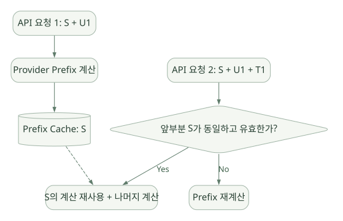

SECOND STUDY / 모델 입력·캐시·압축
모델 입력·캐시·압축
이번 단원의 읽는 관점
시스템 스냅샷과 대화·도구 스키마가 요청으로 조립되는 과정을 읽습니다. Prefix 계산 재사용과 메시지 압축은 서로 다른 문제를 풉니다.
살펴볼 경계캐시가 유지되는 구간, 압축 후 잃는 정보와 Tool Call/Result 짝을 확인하세요.
이 페이지의 세부 목차
6. Prefix Caching: 매번 보내는데 왜 절약되는가?#
6.1 사용자의 질문에 대한 직접 답#
Q. 매 호출에서 같은 Prefix를 LLM 입력에 다시 넣어야 하는데, 무엇이 캐시된다는 건가?
API 요청에 텍스트를 포함하는 것과 모델 서버가 그 Token Prefix의 계산을 새로 수행하는 것은 다르다. KV Cache를 포함한 Prefix 계산 결과를 Provider가 재사용하도록 설계된 캐시라면, 서버는 일정 조건에서 이전 Prefix에 대한 계산을 생략하거나 할인된 요금으로 처리할 수 있다. 일반적으로 요청에는 동일 Prefix가 여전히 존재하므로, 네트워크 전송량이 반드시 줄어드는 것은 아니다.
가로로 이동해서 읽을 수 있습니다. 도식 크게 보기 ↗

원문의 학습용 도식입니다. 연결 방향·분기 조건·점선·쌍방향 연결을 보존해 세로로 배치했습니다. 실제 구현·의사코드·해석의 구분은 본문을 함께 읽으세요.
도식 원문 보기 (Mermaid)
flowchart LR
A[API 요청 1: S + U1] --> B[Provider Prefix 계산]
B --> C[(Prefix Cache: S)]
D[API 요청 2: S + U1 + T1] --> E{앞부분 S가 동일하고 유효한가?}
E -->|Yes| F[S의 계산 재사용 + 나머지 계산]
E -->|No| G[Prefix 재계산]
C -.-> F기억할 문장: Prompt caching은 입력 생략이 아니라 서버 측 Prefix 계산 결과 재사용이다. 가능한 비용 절감과 지연 개선은 Provider의 캐시 정책, 유효 기간, 모델, 요청 구조에 따라 달라진다. 정확한 절감량은 실험 없이는 단정하지 않는다.
6.2 왜 Prefix가 '깨지는가'?#
캐시는 대개 앞에서부터 연속된 동일한 구간에 대해 작동한다. 예를 들어:
1차: [고정 A][고정 B][변동 X][대화 1][대화 2]
2차: [고정 A][고정 B][변동 Y][대화 1][대화 2][새 결과]
└──── 여기까지는 재사용 후보 ────┘중간의 변동 X → Y가 바뀌면 그 뒤의 대화가 글자 단위로 동일하더라도 더 긴 Prefix를 통째로 재사용하기 어렵다. 이것이 'Prefix caching이 깨진다'는 의미다. 변경이 전체 Cache Miss를 의미하는 것은 아니고, 유효한 더 짧은 Prefix까지는 재사용될 수 있다. 실제 단위와 제한은 Provider 계약을 따른다.
6.3 Hermes의 코드상 캐시 전략#
[SRC] agent/prompt_caching.py는 요청별 PromptCachePlan을 생성하고, 캐시 마커를 붙일 메시지·Tool 스키마 사본을 준비한다. 소스 상단 문서는 기본 구성을 4개의 cache_control breakpoint 전략으로 설명한다. build_prompt_cache_plan(...)은 static_system_prefix, native_anthropic, cache_ttl, Tool Cache 지원 조건 등을 받아 요청용 메시지를 만든다.
- 소스는
copy-on-write요청 변환을 지향하며, 영구 세션 메시지 자체를 캐시 마커로 더럽히지 않도록 구분한다. - Native Anthropic과 프록시/호환 API 간 메시지 표현이 다르므로
role:tool마커 적용 방법도 달라진다. - 일회성 호출에서 캐시가 쓰기 비용만 발생하고 재사용되지 않는 경우를 피하는 검사(
is_one_shot_request)가 존재한다. cache_ttl: auto는 세션 성격에 따라 인간 주도형/기계 자동형을 다르게 선택하도록 문서화되어 있다.
코드: https://github.com/NousResearch/hermes-agent/blob/v0.22.5/agent/prompt_caching.py
문서: https://hermes-agent.nousresearch.com/docs/developer-guide/context-compression-and-caching
각 계층별 변경 영향#
| 변경 사건 | 캐시에 예상되는 영향 | Hermes 설계 관점 |
|---|---|---|
| 사용자 질문 하나 추가 | 기존 Prefix 유지 가능 | 대화의 뒤에 append |
MEMORY.md가 세션 중 수정 |
즉시 시스템 프롬프트를 재빌드하면 Prefix 깨질 수 있음 | 세션 시작 스냅샷을 고정해 안정화 |
| System Prompt 앞부분의 지침 변경 | 긴 Prefix의 재사용 어려움 | 안정적 계층을 앞에 배치 |
| Skill 본문을 Tool 결과로 로딩 | 기존 System Prefix를 유지할 여지 | 필요 시 Tool 결과로 추가 |
| 중간 대화 요약·삭제 | 이전 긴 History Prefix의 연속 동일성 깨짐 | 압축 효과와 캐시 손실을 함께 평가 |
| 다른 Provider·Model로 전환 | 기존 Provider 캐시 적용 불가 가능 | 모델·Provider별 캐시 구분 필요 |
6.4 캐싱과 동일성 검사를 어렵게 만드는 것#
- 타임스탬프, 환경 정보, 임시 지침 등을 System 앞부분에 삽입하는 구현.
- 메모리를 자동 저장할 때마다 전체 System String을 다시 만드는 구현.
- 과거 메시지를 수정하거나 Tool 결과를 계속 재작성하는 구현.
- Tool Schema 순서가 실행마다 바뀌는 구현.
- 프록시가 API 메시지/Tool 표현을 바꿔 캐시 마커를 엉뚱한 위치에 놓는 상황.
[INF] 자체 프레임워크를 만들 때는 PromptSnapshotId, cacheable_prefix_hash, history_version, provider_request_hash를 별도로 남기면 Debug에 도움이 된다. 단, 이것은 Hermes가 이 이름으로 필드를 제공한다는 뜻이 아니다.
6.5 발표용 핵심 코드·흐름#
고정 System Snapshot
↓ (길게 유지)
System Prefix Cache Marker
↓
대화/도구 결과 + 새 입력
↓
Provider가 캐시 유효성과 Prefix 동일성을 검사
↓
Cache Hit? → 기존 계산 일부 재사용 / Miss → 재계산분리해 설명할 지표: cache_write_tokens, cache_read_tokens, 실제 과금액, 요청 지연, 첫 토큰 지연. Token 수가 같아도 일부 캐시 Token의 가격은 다를 수 있다.